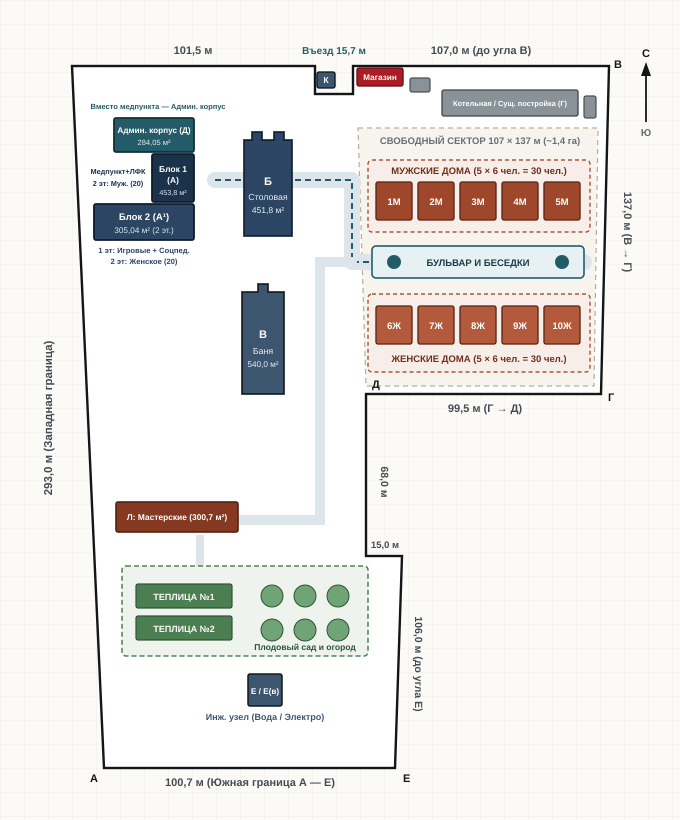
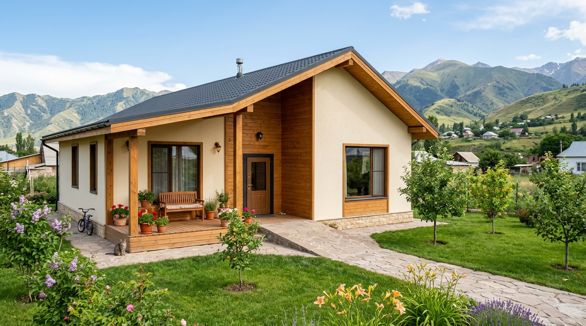
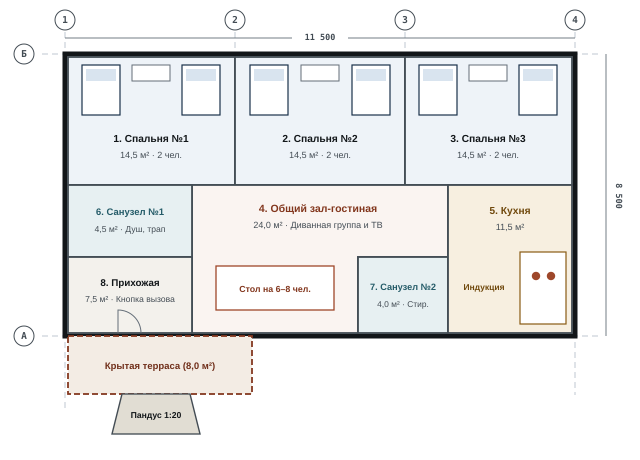
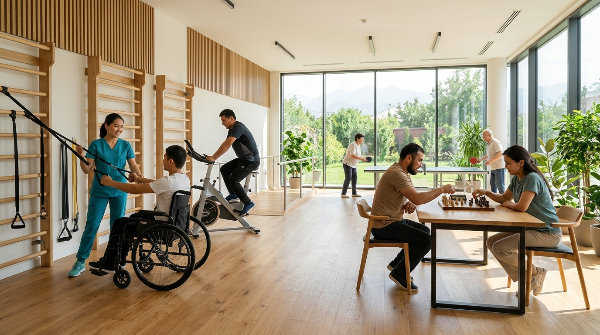

Концепция для Министерства труда, социального обеспечения и миграции Кыргызской Республики
Стационар и малые дома в одном интернате
Новый формат психоневрологического интерната. Пилотная площадка: Покровский СПССУ, с. Семетей, Манасский район, Таласская область.

Кратко
Сейчас все 100 подопечных Покровского интерната живут по одному больничному распорядку: и лежачие больные, и люди, которые могут сами готовить, убирать и работать. Предлагается разделить учреждение на два уровня.
- Стационар на 40 мест с круглосуточным уходом остаётся в существующих корпусах.
- На свободном участке интерната строятся 10 малых домов по 6 человек, всего 60 мест. Жители сами ведут хозяйство и работают.
- Жителей домов сопровождает социальный педагог, один на 30 человек.
- Если состояние ухудшается, житель временно переходит в стационар, его место в доме сохраняется.
- Начать предлагается с пилота на 2 дома и 12 человек.
1. Зачем менять формат
Модель интерната сложилась десятилетия назад и рассчитана на людей, которым нужен постоянный уход. Но среди подопечных много тех, кому больничный режим не нужен.
- Все живут как пациенты. Лежачий больной и человек, который может работать, живут в одинаковых палатах и по одному распорядку.
- Бытовые навыки теряются. Тот, кто мог бы сам готовить и стирать, годами этого не делает, и вернуться к самостоятельной жизни ему всё труднее.
- Уход распыляется. Медсёстры и санитарки распределяют внимание на всех 100 человек, хотя постоянный уход нужен примерно 40 из них.
- Международные обязательства. В 2019 году Кыргызстан ратифицировал Конвенцию ООН о правах лиц с инвалидностью. Статья 19 Конвенции закрепляет право жить в обществе. Малые дома на территории интерната являются практическим шагом в этом направлении.
2. Как устроен формат
Каждый подопечный получает тот уровень поддержки, который нужен ему сейчас. Похожие модели применяются в странах Европы (малые групповые дома) и в Турции (Umut Evleri, «Дома надежды»).
| Параметр | Уровень 1. Стационар | Уровень 2. Малые дома |
|---|---|---|
| Для кого | Лежачие и тяжёлые пациенты, которым помощь нужна каждый день | Люди со стабильным состоянием, которые могут себя обслуживать |
| Где | Вторые этажи корпусов А и А¹ | 10 новых одноэтажных домов на свободном участке интерната |
| Мест | 40: мужское и женское отделения по 20 мест | 60: 5 мужских и 5 женских домов по 6 человек |
| Быт | Питание из столовой, уход персонала | Жители сами готовят завтрак и ужин, убирают и стирают |
| Кто помогает | Медсёстры и санитарки, круглосуточно | Социальный педагог (1 на 30 человек), мастера, психолог; медсестра приходит утром и вечером |
Общими для обоих уровней остаются медпункт с изолятором, зал ЛФК, сенсорная комната, клуб, столовая, баня-прачечная, мастерские, теплицы и сад.
Что меняется
| Сейчас | В новом формате |
|---|---|
| Все 100 человек живут в общих палатах по одному распорядку | 40 человек в стационаре, 60 в малых домах |
| Бытовые навыки не используются | Жители домов сами готовят, убирают и стирают |
| Персонал распределён на всех подопечных | Медперсонал работает со стационаром, жителей домов сопровождают соцпедагоги |
| Кабинеты врачей и администрации смешаны с жилыми комнатами | Первые этажи корпусов отданы под медпункт, ЛФК и клуб, администрация в отдельном здании |
3. Кто живёт в малых домах
Переезд в дом добровольный. Решение принимает медкомиссия вместе с психологом и социальным педагогом после индивидуальной оценки каждого подопечного.
Условия для переезда
- Состояние стабильное, постоянное медицинское наблюдение не требуется.
- Человек сам одевается, моется, ест и ориентируется на территории.
- Готов жить с соседями и участвовать в общих делах дома или готов этому учиться.
- Сам хочет переехать.
Число 60 является предварительной оценкой персонала. Точный список определяет медкомиссия. Соседей по дому и спальне подбирают с учётом совместимости.
Если состояние меняется
- При обострении житель временно переходит в изолятор или стационар. Его место в доме сохраняется.
- После стабилизации он возвращается в свой дом.
- Подопечный стационара, чьё состояние улучшилось, после оценки может переехать в дом.
- Если жить в доме не получается, человек возвращается в стационар. Это рассматривается как смена уровня поддержки.
4. Обычный день в доме
Примерный распорядок жителя малого дома. Человек сам отвечает за свой быт, специалисты помогают и подстраховывают.
| Время | Что происходит |
|---|---|
| 07:30 | Подъём и завтрак. Готовят сами, по графику дежурств в доме. |
| 08:30 | Медсестра обходит дома и контролирует приём лекарств. |
| 09:30 | Работа в мастерских, теплицах или саду по желанию и возможностям. ЛФК и занятия с психологом по индивидуальной программе. |
| 13:00 | Горячий обед из столовой интерната. |
| 14:30 | Занятия с социальным педагогом: покупки, стирка, уборка, планирование меню. Клуб, спорт, прогулки. |
| 18:30 | Ужин в доме. Готовят вместе из продуктовых наборов столовой и овощей из теплиц. |
| 20:00 | Вечерний обход медсестры, приём лекарств. |
| 22:00 | Отбой. Дежурный обходит квартал, в каждом доме есть тревожная кнопка с выходом на пост медсестры. |
Кто сопровождает жителей домов
| Специалист | Ставок | Задачи |
|---|---|---|
| Социальный педагог | 2 (1 на 30 жителей) | Куратор мужского и куратор женского квартала. Учит быту, помогает решать конфликты, ведёт индивидуальный план каждого жителя. |
| Мастер трудового обучения | 4 | Столярное и швейное дело, теплицы и сад, благоустройство территории. |
| Психолог | 1–2 | Подбор соседей, профилактика конфликтов, занятия в сенсорной комнате. |
| Инструктор ЛФК | 1 | Занятия в зале ЛФК для жителей домов и пациентов стационара. |
| Медсестра | из действующего штата | Приём лекарств утром и вечером, выход по тревожной кнопке. |
Медсёстры и санитарки остаются в штате и работают со стационаром.
5. Территория
Площадь участка интерната около 4,5 га. Малые дома строятся на свободном участке около 1,4 га в северо-восточной части территории, рядом с медпунктом, столовой и мастерскими. Подстанция и водокачка уже есть, новые дома подключаются к ним.

Назначение зданий
| Здание | Площадь | Назначение в новом формате |
|---|---|---|
| Корпус А, 2 этажа | 453,84 м² | 1-й этаж: медпункт (процедурная, изолятор с отдельным входом, кабинеты врачей), зал ЛФК, сенсорная комната. 2-й этаж: мужское отделение стационара, 20 мест. |
| Корпус А¹, 2 этажа | 305,04 м² | 1-й этаж: клуб (теннис, шахматы, кино, библиотека, арт-терапия), кабинеты соцпедагогов и мастеров. 2-й этаж: женское отделение стационара, 20 мест. |
| Здание Д (бывший медпункт) | 284,05 м² | Администрация. |
| Столовая Б | 451,81 м² | Питание стационара, обеды и продуктовые наборы для домов. |
| Баня В | 540,00 м² | Баня и прачечная. |
| Склад Л | 300,70 м² | Столярная и швейная мастерские. |
| Проходная К | 22,40 м² | Проходная и лавка, где продаются изделия мастерских. |
| Малые дома (новые) | 10 × 95 м² | 5 мужских и 5 женских домов по 6 человек. |
| Теплицы и сад (новые) | около 0,35 га | Трудовая реабилитация, овощи для домов и столовой. |
6. Малый дом
Одноэтажный дом на 6 человек площадью 95 м² с крытой террасой 8 м². Вход без ступеней, пандус с уклоном 1:20. Мебель домашняя, больничных коек и решёток нет.
Дом в 3D
Чтобы повернуть дом, потяните его мышью или пальцем влево или вправо. Кнопки показывают отдельные комнаты крупнее.
Дом на 6 человек: три спальни на двоих, общий зал, кухня, два санузла, прихожая и терраса с пандусом.


| Помещение | Площадь | Что внутри |
|---|---|---|
| 3 спальни на двоих | по 14,5 м² | Обычные кровати, личные шкафы и тумбочки, кнопка вызова. |
| Общий зал | 24,0 м² | Обеденный стол на 6–8 человек, диван, телевизор. |
| Кухня | 11,5 м² | Индукционная плита с автоотключением, холодильник, мойка. Газа в доме нет. |
| 2 санузла | 4,5 и 4,0 м² | Душ без порога, поручни, стиральная машина. |
| Прихожая | 7,5 м² | Шкаф для одежды, тревожная кнопка, пожарная сигнализация. |
| Терраса | 8,0 м² | Навес, скамейки, пологий пандус. |


7. Безопасность
Медицинская помощь
Утром и вечером медсестра обходит все дома и контролирует приём лекарств. Медпункт и изолятор находятся в нескольких минутах ходьбы. При обострении житель временно переходит в стационар, место в доме сохраняется.
Быт и ночное время
На кухнях только индукционные плиты с автоотключением, газа нет. В каждом доме датчики дыма и тревожная кнопка с выходом на пост медсестры. Ночью квартал обходит дежурный.
Работа в мастерских и теплицах
Участие добровольное и входит в индивидуальную программу реабилитации. Овощи идут на кухни домов и в столовую. Изделия мастерских продаются в лавке у входа, где жители учатся общаться с покупателями.

8. Порядок запуска
Формат сначала проверяется на небольшой группе. Решение о расширении принимается по результатам пилота.
- Подготовка. Утверждение концепции, положение о сопровождаемом проживании, оценка всех 100 подопечных, проект типового дома.
- Пилот. Один мужской и один женский дом, 12 человек. Первый социальный педагог, запуск мастерской и теплицы.
- Оценка через 6–12 месяцев. Навыки и здоровье жителей, число обострений, нагрузка на персонал, мнение жителей и родственников.
- Полный квартал. Ещё 8 домов, второй социальный педагог, перенос администрации, обновление первых этажей корпусов.
- Распространение. Типовой проект дома, положение и норматив штата для других психоневрологических интернатов страны.
| Показатель | Пилот | Полный квартал |
|---|---|---|
| Малых домов | 2 | 10 |
| Живут в домах | 12 человек | 60 человек |
| Остаются в корпусах | 88 человек | 40 человек |
| Социальных педагогов | 1 | 2 |
| Мастеров обучения | 1 | 4 |
| Площадь новых домов | 190 м² | 950 м² |
9. Что нужно от министерства
- Одобрить концепцию двухуровневого формата: стационар и малые дома сопровождаемого проживания в одном учреждении.
- Определить Покровский СПССУ пилотной площадкой и разрешить использовать свободный участок интерната под первые дома.
- Поручить разработать положение о сопровождаемом проживании и норматив штата: 1 социальный педагог на 30 жителей домов.
- Создать рабочую группу из представителей министерства, интерната и медиков для подготовки пилота.
Финансовые расчёты готовятся после одобрения концепции под конкретный объём пилота.
Приложения
Приложение 1. Изменения в штатном расписании
| Должность | Ставок | Где работает | Основные задачи |
|---|---|---|---|
| Социальный педагог (новая ставка) | 2 | Мужской и женский кварталы малых домов; кабинеты на 1-м этаже корпуса А¹ | Ежедневное сопровождение 60 жителей: планирование быта, совместное приготовление еды, график уборки и стирки, досуг. |
| Мастер трудового обучения (новая ставка) | 4 | Мастерские (склад Л), теплицы, сад, лавка | По одному мастеру: теплицы и сад; швейное дело; столярное дело и ремонт; бытовой сервис и благоустройство. |
| Инструктор ЛФК (новая ставка) | 1 | Зал ЛФК, 1-й этаж корпуса А | Ежедневные занятия для жителей домов, адаптивная гимнастика для пациентов стационара. |
| Психолог | 1–2 | Сенсорная комната, малые дома | Подбор соседей, профилактика конфликтов в группах по 6 человек, работа с тревожностью. |
| Медсёстры и санитарки | по нормативу стационара | Стационар (2-е этажи корпусов А и А¹), медпункт | Круглосуточный уход за 40 пациентами, процедурный кабинет и изолятор, контроль приёма лекарств в домах утром и вечером. |
Приложение 2. Здания по техпаспорту БТИ
Источник: таблица № 2 техпаспорта «Характеристика строений и сооружений». Скан таблицы · скан генплана.
| Литера | Строение | Площадь, м² |
|---|---|---|
| А | Общежитие (корпус А) | 453,84 |
| А¹ | Общежитие (корпус А¹) | 305,04 |
| Б | Столовая | 451,81 |
| В | Баня | 540,00 |
| Г | Котельная | 366,30 |
| Д | Медпункт (станет административным зданием) | 284,05 |
| Е | Подстанция | 51,00 |
| Е(в) | Водокачка | 65,00 |
| Ж | Сторожка | 24,42 |
| З | Навес | 71,38 |
| И | Надворная постройка | 40,80 |
| К | Проходная | 22,40 |
| Л | Склад (станет мастерскими) | 300,70 |